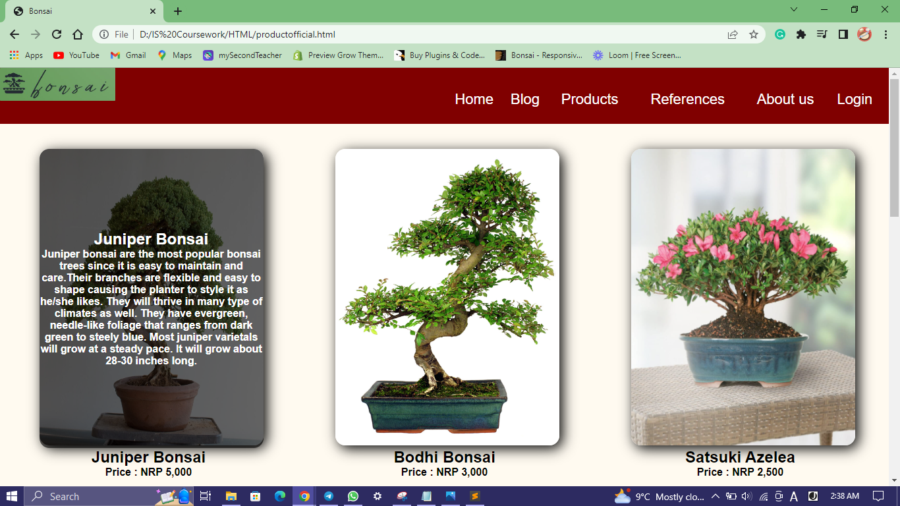
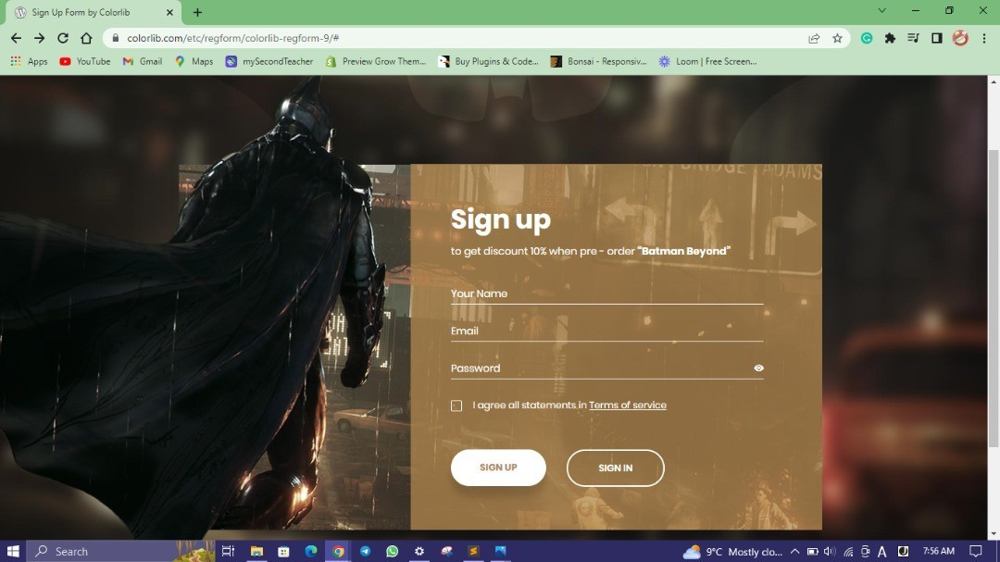
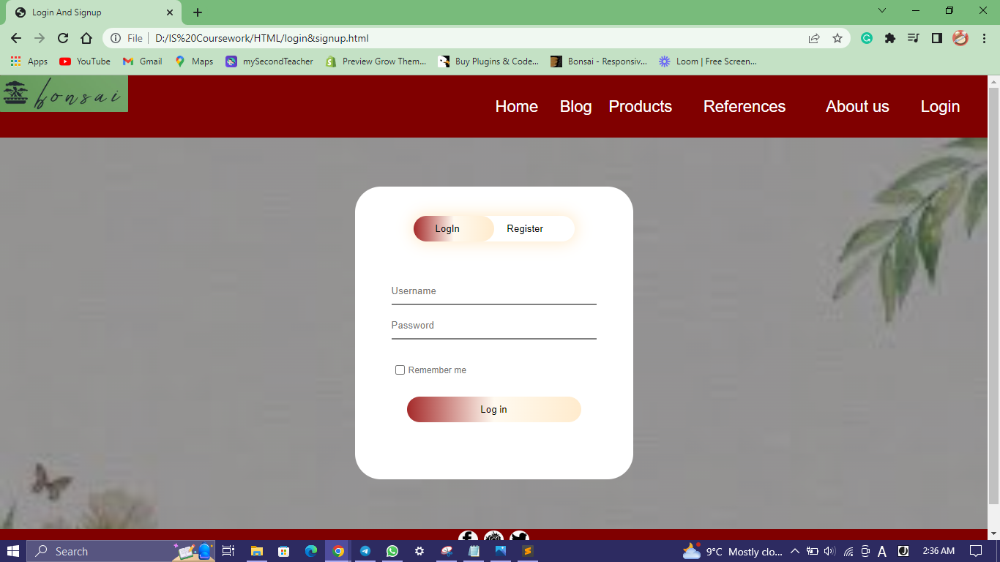
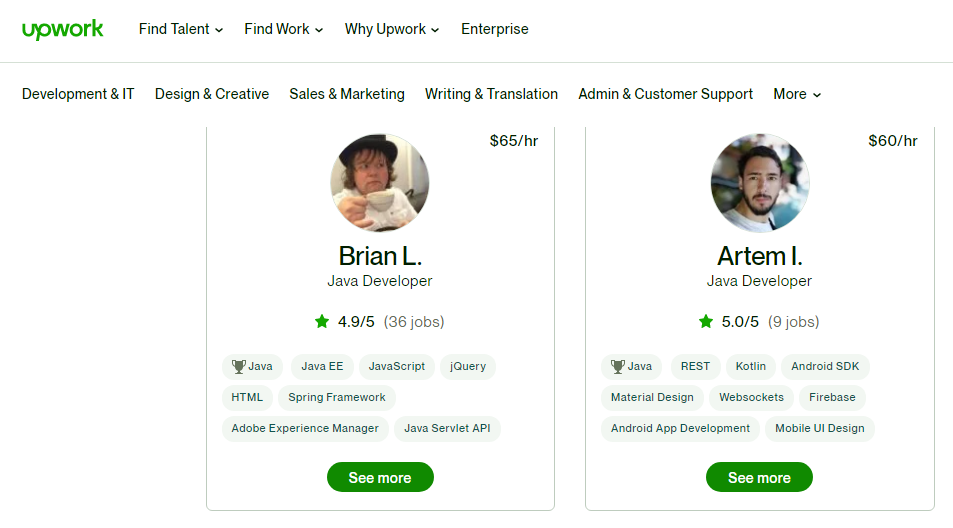
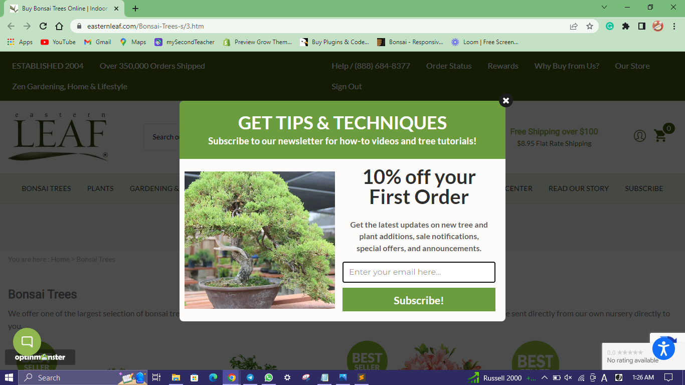
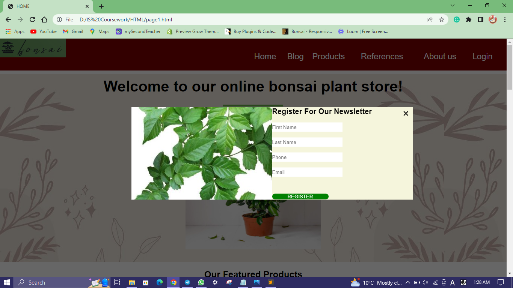

| Research Page | Our page |
|---|---|

... This webpage helped us note some design on how we can place the product card on our product page.
|

... The webpage we created has some hints of the reference page. As it is clearly shown that there's not much of similarities but the reference helped a lot.
|

... This webpage helped us to get some idea on how we can make a regular sign in/ login page a bit more interesting
|

... This page of our website is made using Javascript. Overflow was hidden from the page that helped in changing the login form with registration form.
|

... While scrolling over a lot of pages to take inspiration on how to actually design our portfolio page we came across this page and we thought that referencing this design on our CV portion woud work properly for us.
|
... As it can be seen that there is a hint of reference page in our webpage. Choosing this design we had some doubt on how it might appear. Nevertheless, it came nice more than we expected than we thought it would look.
|

... When scrolling this page popup for a newsletter appeared and we thought it would look nice on our website it we actually make a pop-up newsletter form.
|

... The webpage we created has some hints of the reference page. As it is clearly shown that there's not much of similarities but the reference helped a lot creating this page. The idea of making the newsletter's background transparent makes the page popup even more.
|